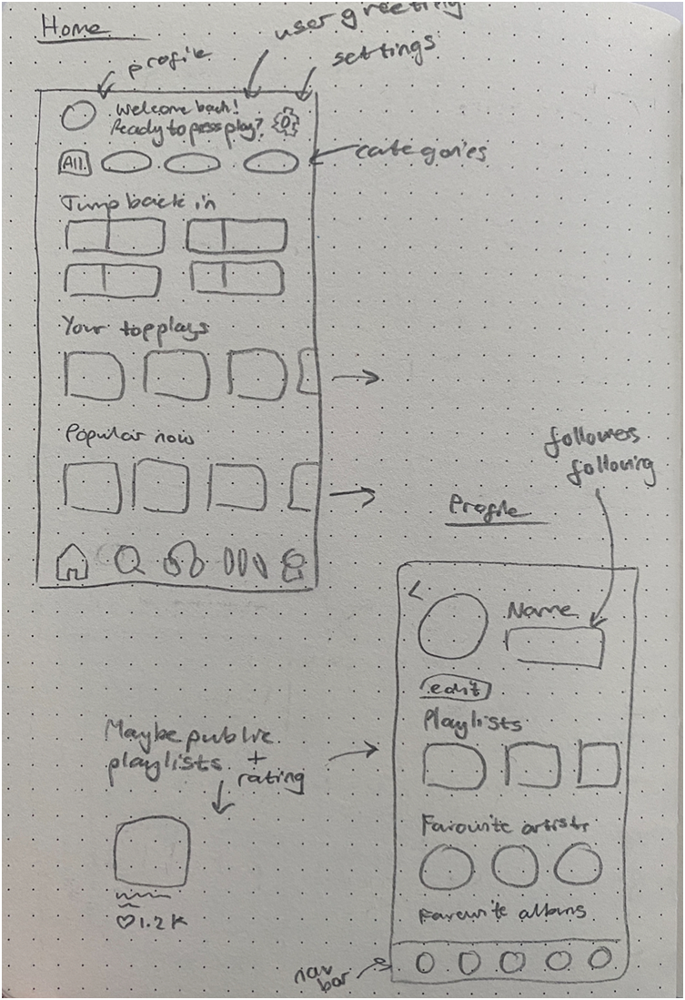
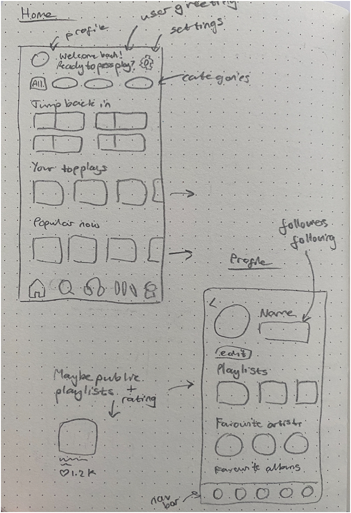
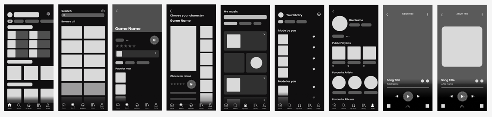
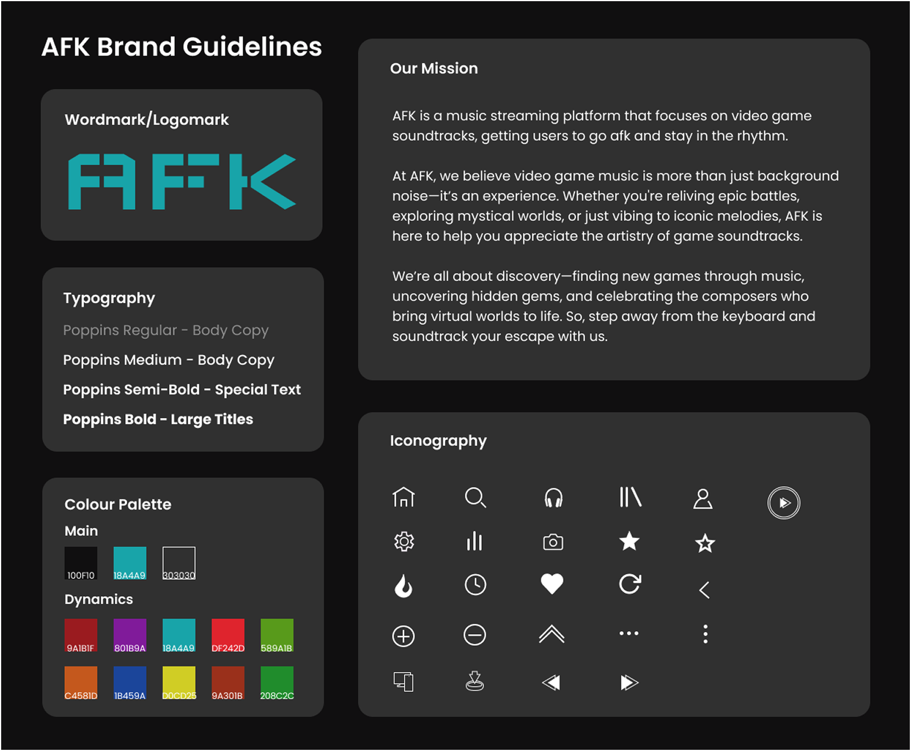
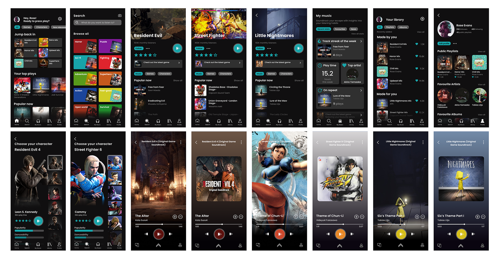
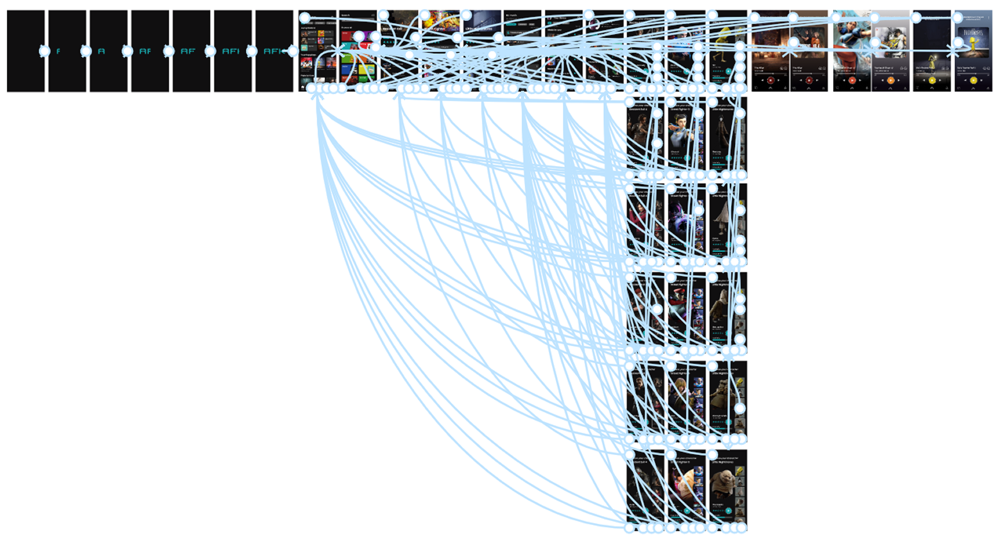
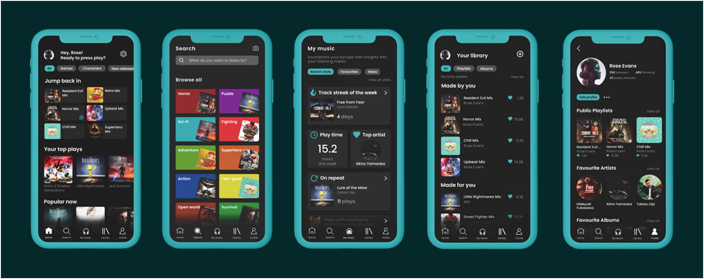

AFK
Go AFK, stay in the rhythm
AFK is a music player app that focuses on video game soundtracks, tailored for users who appreciate the artistry of game soundtracks and is all about discovery—finding new games through music and celebrating the composers who bring virtual worlds to life.
Brief
The brief was to design and prototype a mobile music player app that delivers a seamless listening experience and a bespoke set of icons.
Ideation
I began the ideation process with a broad mind map to identify the core elements of a music streaming app. Early on, I explored how visual presentation could shape the experience, considering whether imagery should lean towards photography or illustration.
I also experimented with the idea of positioning the app as a socially-driven platform (similar to a social network for music) where users could connect over shared tastes, leave live comments on tracks, and participate in community-driven features such as awards for the most anticipated upcoming artist.
However, I wanted to refine the concept into something more focused. Since the brief allowed for designing around a specific genre, I chose to centre the app on video game soundtracks, giving the product a distinctive identity and a clear direction.
Concept
My concept was to create a music streaming app designed for video game soundtracks with one of the core ideas behind it being users discovering new games through the music. Just as players might discover new artists through traditional streaming platforms, this app would let users find new games by exploring their music first. A soundtrack can reveal a lot about a game's atmosphere, storytelling, and design, and so this app helps users connect with titles they might not have encountered otherwise. It would also encourage a deeper appreciation of game composers and the artistry behind video game music. Many soundtracks are carefully composed to match a game's tone, pacing, etc, and so this would shine a spotlight on that craftsmanship, allowing users to enjoy game music in its own right.
Research
In reviewing music apps, I found they succeeded by offering strong personalisation, tailoring playlists and recommendations to individual listening habits. They also emphasise interactive discovery, encouraging users to explore new music through curated collections and social features.
At the same time, many suffer from cluttered interfaces, where too many competing elements make navigation overwhelming.
Through this research, I also noticed a gap in the market: while mainstream apps cover broad genres, there are very few platforms dedicated specifically to soundtrack‑driven listening, such as video game or film scores—highlighting an opportunity for differentiation.
Sketching
I mapped out the core screens of the app, including Playing Music, Discovery/Search, Home, Profile, Library, and My Music, to establish a clear user flow. I also explored additional video game–specific screens to highlight the soundtrack focus and differentiate the experience from standard music apps.
 

Digital Development
I began with low‑fidelity wireframes to quickly map out the structure and flow of the app before moving into high‑fidelity screens. Throughout this stage, I carefully considered consistency in style, brand identity, and how to capture the 'game‑inspired' vibe through colour, typography, and iconography. I also created a style guide to ensure visual cohesion across the interface. In the end, I designed far more screens than originally required, as I wanted to fully flesh out the experience and make the app feel more real and functional.
  Prototyping
This was my first experience with prototyping, and while the large number of screens initially felt daunting, the process quickly started to make sense. It was rewarding to connect everything together and see the app come to life as a functional, interactive experience.
Final Design
I was pleased with how many screens I produced, resulting in a well‑fleshed‑out app that felt unique and seamless. Developing and refining the user flow was especially enjoyable, as it brought the whole experience together.
